The Peal of the Indian Ocean.
Sri lanka formerly known as Ceylon, and officially the Democratic Socialist Republic of Sri Lanka. Sri Lanka has a total of 25 districts. Each district is bound to a province.There are 9 provinces in total. The districts constitute the Second Level of the administrative structure.
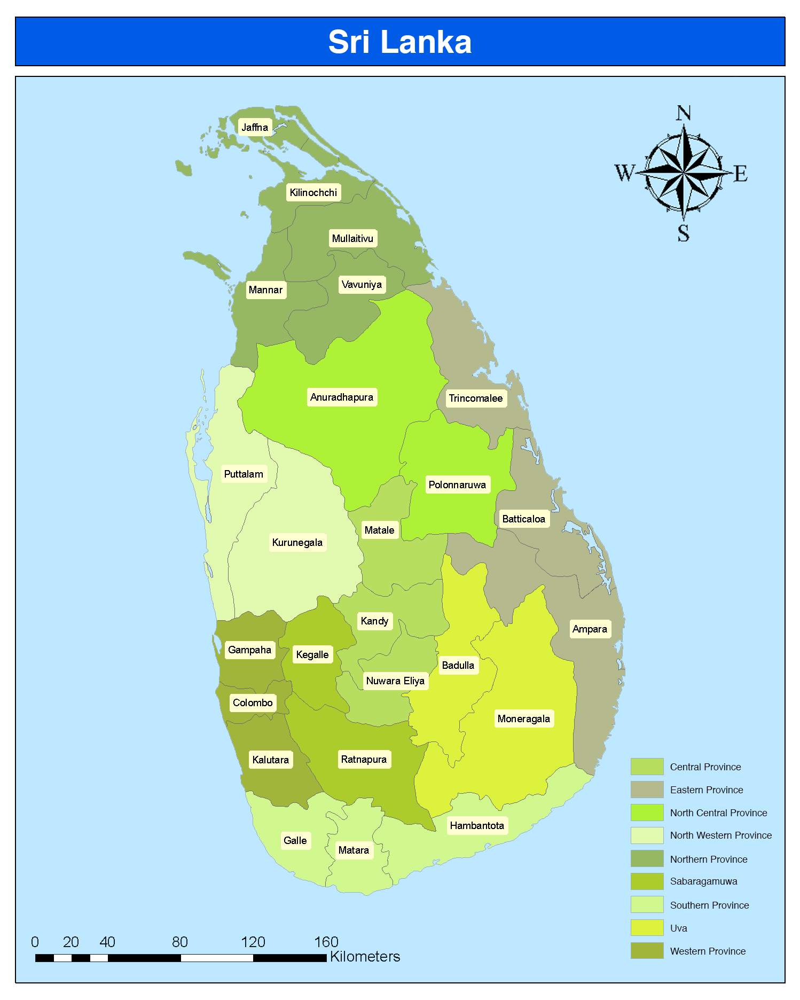Sri Lanka's documented history goes back 3,000 years, with evidence of prehistoric human settlements that dates to at least 125,000 years ago. It has a rich cultural heritage. The culture of Sri Lanka is influenced primarily by Buddhism and Hinduism. Sri Lanka is the home to two main traditional cultures: the Sinhalese (centered in Kandy and Anuradhapura) and the Tamil (centered in Jaffna).
Festivals
Buddhists all over the world celebrates the Vesak Full Moon Poya Day today (May 25). Buddhists across the world commemorate the significant events of Siddhartha Gautama's birth, enlightenment (Nibbāna), and passing away (Parinirvāna) of Gautama Buddha on. the Vesak Full Moon Poya Day.People decorate their houses and public places with colourful lanterns called Vesak koodu are hung along streets and in front of homes.Esala Perahera is a symbolic Buddhist festival consisting of dances and decorated elephants held in Kandy in July and August. Fire dances, whip dances, Kandyan dances, and various other cultural dances are integral parts of the festival. Christians celebrate Christmas on 25 December to celebrate the birth of Jesus Christ and Easter to celebrate the resurrection of Jesus. Tamils celebrate Thai Pongal and Maha Shivaratri, and Muslims celebrate Hajj and Ramadan.
.jpg)
Vesak full moon poya day
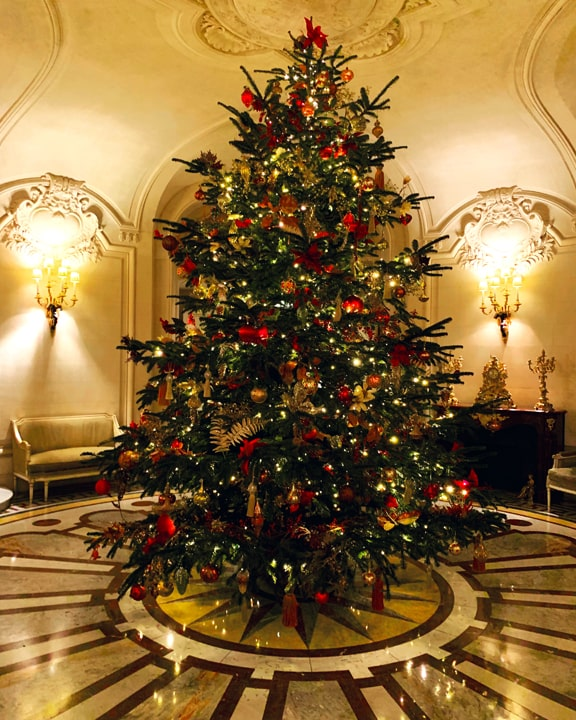Chrismas
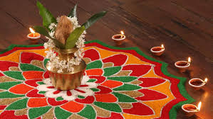Thai Pongal and Maha Shivaratri
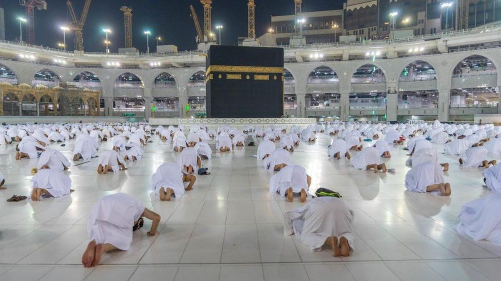Hajj and Ramadan
Sport
Every country has given importance to a selected set of things according to their relevance and considered them as their unique or national symbols. As such, Sri Lanka, as a country, also has a set of symbols. Among them, our national sport, although Cricket is quite visibly popular among Sri Lanka, is Volleyball. Volleyball was introduced first in 1916 by Mr. R. W. Camack who was then the Director of Physical Education at the Colombo Y.M.C.A. to Sri Lanka. Before introducing that, Sri Lankans played a similar sport called ‘Elle’. It says that, before Volleyball, Elle had been recognized as the National sport. However, in 1991 Volleyball was officially announced as the national sport in Sri Lanka. Volleyball came as an indoor game and then with the time being it further improved into beach volleyball as well as outdoor courts. It is a worldwide sport, mostly popular in Europe and East Asia. It is a sport which consists of two teams with 6 players on each side separated by a net. Each team should ground the ball on the opposing side to score points. As same as in every sport, this also has a set of rules and regulations that the players must follow. In Sri Lanka, we can usually witness this as an indoor game. But, on some occasions, we can see the varieties such as beach volleyball, and sitting volleyball as well.
Economy
What is the main economy in Sri Lanka? The main economic sectors of the country are tourism, tea export, apparel, textile, rice production and other agricultural products. In addition to these economic sectors, overseas employment contributes highly in foreign exchange.
Services accounted for 58.2% of Sri Lanka's economy in 2019 up from 54.6% in 2010, industry 27.4% up from 26.4% a decade earlier and agriculture 7.4%.[8] Though there is a competitive export agricultural sector, technological advances have been slow to enter the protected domestic sector. Sri Lanka is the largest solid and industrial tyres manufacturing centre in the world and has an apparel sector which is moving up the value chain.But rising trade protection over the past decade has also caused concern over the resurgence of inward looking policies.[35] In services, ports and airports are helping the country's newfound status as a shipping and aviation hub. Port of Colombo is the largest transshipment hub in South Asia. There is a growing software and information technology sector, which is competitive and is open to global competition.Tourism is a fast expanding area. Lonely Planet named Sri Lanka the best destination to visit in 2019 and Travel+Leisure the best island.Sri Lanka's top export destinations are the United States, United Kingdom and India. China, India and the UAE are the main import partners
 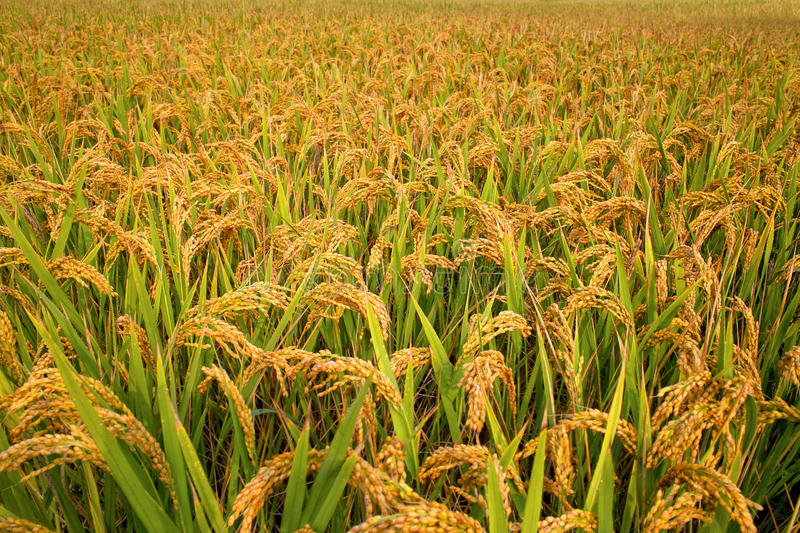
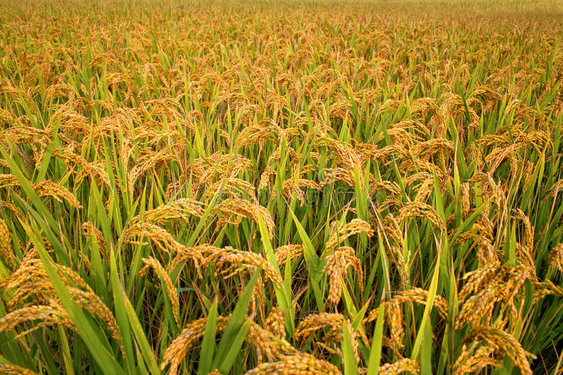
Cuisine
The cuisine of Sri Lanka is primarily influenced by that of Southern India, Indonesia and the Netherlands. Rice is a staple and usually consumed daily, and it can be found at any special occasion, while spicy curries are favourite dishes for lunch and dinner. A very popular alcoholic drink is toddy or arrack, both made from palm tree sap. Rice and curry refers to a range of Sri Lankan dishes. Sri Lankans also eat hoppers (Aappa, Aappam,) which can be found anywhere in Sri Lanka. More recently, there has been a rise of westernised Tamil chefs returning to Colombo, including the now famous Janakan Gnananandan who spent his early years training in South London's Michelin Star restaurants. This influx has given rise to a new breed of Sri Lankan and Tamil cuisine that blends traditional spices with European fast food, such as Rmammidan, meaning hot chips that has proven very popular with younger generations.[citation needed] Much of Sri Lanka's cuisine consists of boiled or steamed rice served with spicy curry. Another well-known rice dish is kiribath, meaning milk rice. Curries in Sri Lanka are not just limited to meat or fish-based dishes, there are also vegetable and even fruit curries. A typical Sri Lankan meal consists of a "main curry" (fish, chicken, or mutton), as well as several other curries made with vegetable and lentils. Side-dishes include pickles, chutneys and "sambols" which can sometimes be fiery hot. The most famous of these is the coconut sambol, made of scraped coconut mixed with chili peppers, dried Maldivian fish and lime juice. This is ground to a paste and eaten with rice, as it gives zest to the meal and is believed to increase appetite. In addition to (sambols, Sri Lankans eat "(mallung", chopped leaves mixed with grated coconut and red onions. Coconut milk is found in most Sri Lankan dishes and it gives the cuisine its unique flavor. Restaurants serving Indian and Chinese cuisine are popular and found throughout the country.
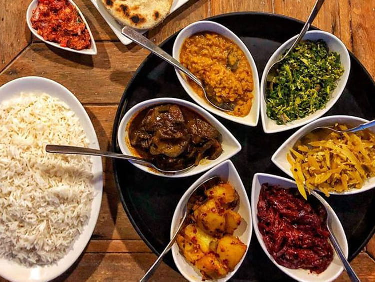 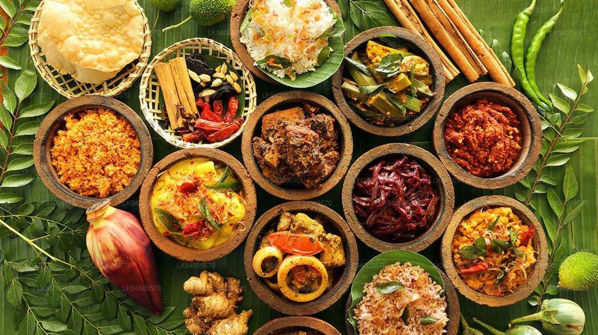Arts and Crafts
Masks
Masks are deeply connected to Sri Lankan folk-lore and take on a functional role where they are used in healing rites and rituals. Known popularly as devil dances, some are dance-drama performances that tell an elaborate story and is enacted by experienced dancers and actors wearing these masks. One of the most popular and ancient acts is the 18 Sanni that are thought to represent diseases or ailments caused by yakkas (devils). Eighteen masks carved to represent the torment felt through these diseases are worn by an exorcist and a tovil, a devil dance, is performed. Other popular mask dances or dramas are Kolam and Raksha, one a comedic performance and the other masks mainly used in festivals and processions.

Handloom
Handloom is generally found around the island as a self-employed or entrepreneurial activity where this skill which has been passed down from generation to generation has been revived and practised. 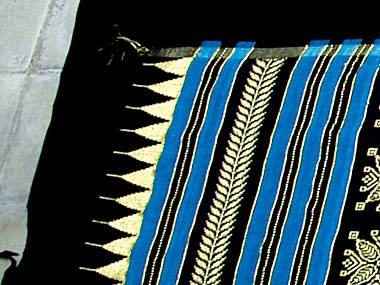Making of traditional drums
The traditional drums, or Bera, is undoubtedly part of the Sri Lankan culture. The special skill and craftsmanship required for the making of these drums are possessed by a numbered few—communities across Kurunegala and Hodiyadeniya in the Kandy district. 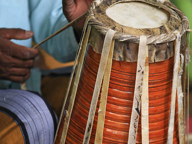Lacquer work (Laksha)
These skillfully made traditional handicrafts are a very popular choice amongst tourists and seekers of tokens depicting Sri Lankan culture. Originating in central Sri Lanka, the knowledge of lacquer making has spread throughout the island over the centuries. The base product for the traditional lacquerware is a wax derived from a species of insects, which is imported from India. Whilst the age-old methods are used by some, new tools and procedures introduced with time are preferred by the others in the making of these complex and exquisite designs. 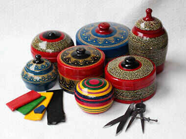Brass work
Products made out of brass have been used in everyday life in Sri Lanka. Brass products are either wrought or cast and adorned with carvings or designs. Some of these products include artefacts used for religious purposes such as oil lamps, as well as household utilities including boxes, baskets, chairs, trays, containers, locks, hinges and vases. It is very likely that you will come across some of these products being sold on the pavements of Colombo.
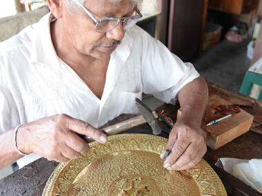